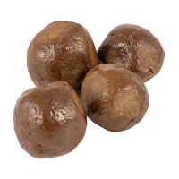

Продукт
Полезные свойства
Цена за 100гр.
Липовый

Оказывает целительное местное воздействие при ожогах, гнойных ранах, мастите, экземе и в терапии других дерматитов. Полезен при воспалении желудочно-кишечного тракта,при нарушении функционирования желчного пузыря.Помогает при заболеваниях почек, помогает при уретрите и цистите.
120
Гречишный

Оказывает благотворное влияние на микрофлору организма, применяется при лечении разнообразных хронических заболеваниях желудочно-кишечного тракта.Способствует регенерации и восстановлению тканей в организме, поэтому применяется при лечении гастритов и язвенных болезней. Отличается повышенным содержанием железа, что при его употребнелии способствует повышению уровня гемоглобина в крови.
90
Майский

Обладает выраженным противовоспалительным, жаропонижающим, болеутоляющим действием. Эффективен в качестве средства для лечения состояний, сопровождающихся внутренними кровоизлияниями. Рекомендуется для лечения заболеваний желудочно-кишечного тракта,помогает рубцеванию ран и язв, ускоряет регенерацию кожных покровов, останавливает кровотечения и лечит болезни кожи.
95
Боярышниковый
Он эффективен в лечении аритмии, помогает регулировать артериальное давление,облегчает состояние при атеросклерозе, полезен при самых разных сердечно-сосудистых болезнях.Он считается одним из самых полезных продуктов для пожилых людей.
85
Акациевый
Рекомендуют при нервном перевозбуждении, стрессовых ситуациях,при нарушениях сна.Способствует улучшению работы печени.Оказывает благотворное влияние на почки.Способствует восстановлению кровяного давления. Является наименее аллергенным сортом.
150
Прополюс

Этот препарат принимают для лечения различных заболеваний желудочно-кишечного тракта, опухолей, кожных покровов, дыхательных путей, кровеносной и мочеполовой систем и не только. В этом универсальность прополиса. Чудодейственное природное средство лечит практически любое заболевание, оказывает благотворный общеукрепляющий эффект на весь организм. Любой недуг вызван сбоем в организме, который может произойти из-за попадания вредоносных веществ извне или внутренних нарушений.
40
Перга

Польза перги – в ее уникальном химическом составе. На 1/3 она состоит из белков, остальное – это витамины, ферменты, аминокислоты и микроэлементы. Улучшает кровообращение, ограничивает вредное воздействие окружающей среды. Также ее применение защищает человека от патогенных вирусов и бактерий, способных вызвать инфекционные заболевания. Способна восполнить нехватку ферментных частиц, восстановить поджелудочную железу, улучшить усвояемость и перевариваемость пищи, улучшить отток желчи, предохранить от развития очагов панкреонекроза.
300
Пчелиные соты

Мед в сотах ценится вдвойне по сравнению с обычным продуктом пчеловодства. Поскольку он обладает лечебными свойствами и помогает при: патологии дыхательного отдела, дефектах ротовой полости, язве желудка, кишечных патологиях, дефиците железа в биологической жидкости, пониженное или повышенное давление, патологии глаз.
30